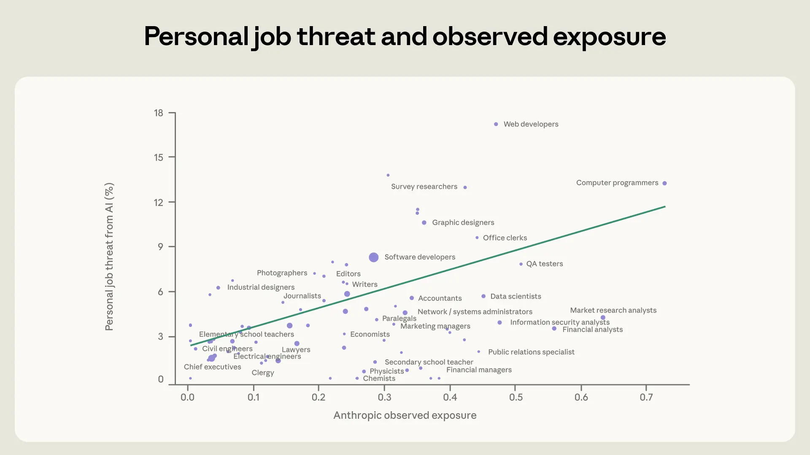
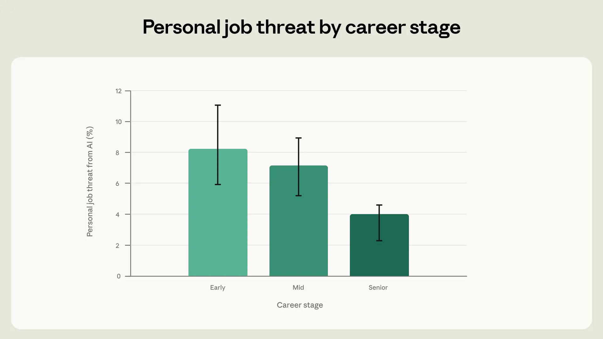
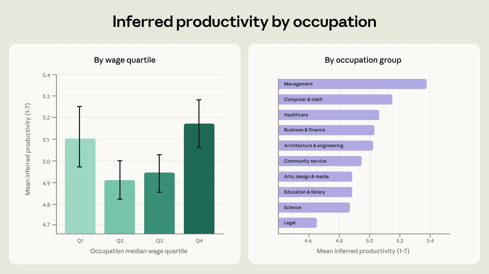
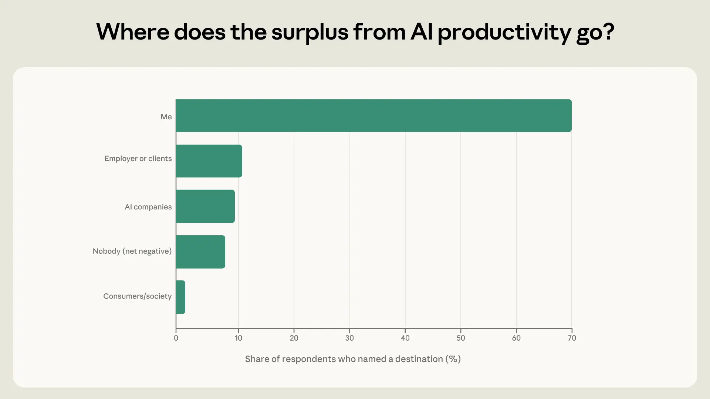
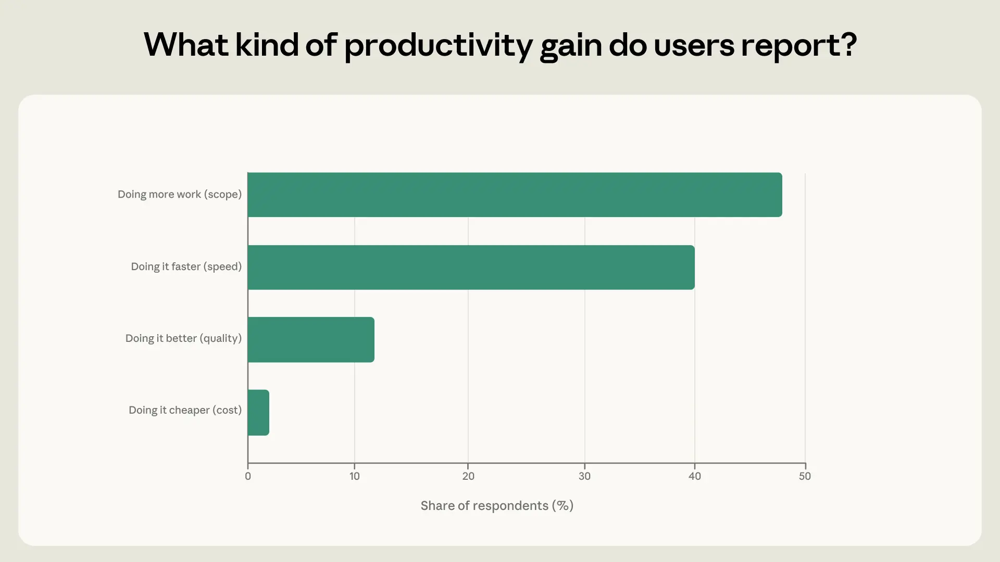

A survey of 81,000 Claude users reveals that workers in roles more exposed to AI express greater concerns about job displacement, particularly early-career respondents. Productivity gains from AI are reported across income levels, with the highest- and lowest-paid occupations experiencing the largest benefits, often from new task capabilities. The study links observed AI usage patterns with worker perceptions, showing that perceived job threat correlates with AI exposure. While some fear automation, others feel empowered. The findings highlight economic anxieties and benefits, providing insights into AI's labor market impact.
一项对81,000名Claude用户的调查显示，AI暴露程度与工作替代担忧正相关，尤其是早期职业者。高收入和低收入职业均报告显著生产力提升，但担忧也更高。研究将AI使用模式与工人经济感受联系起来，发现感知到的失业威胁与AI暴露相关。一些人担忧自动化，另一些人则感到赋能。这些发现揭示了AI对劳动力市场的经济焦虑与收益。




